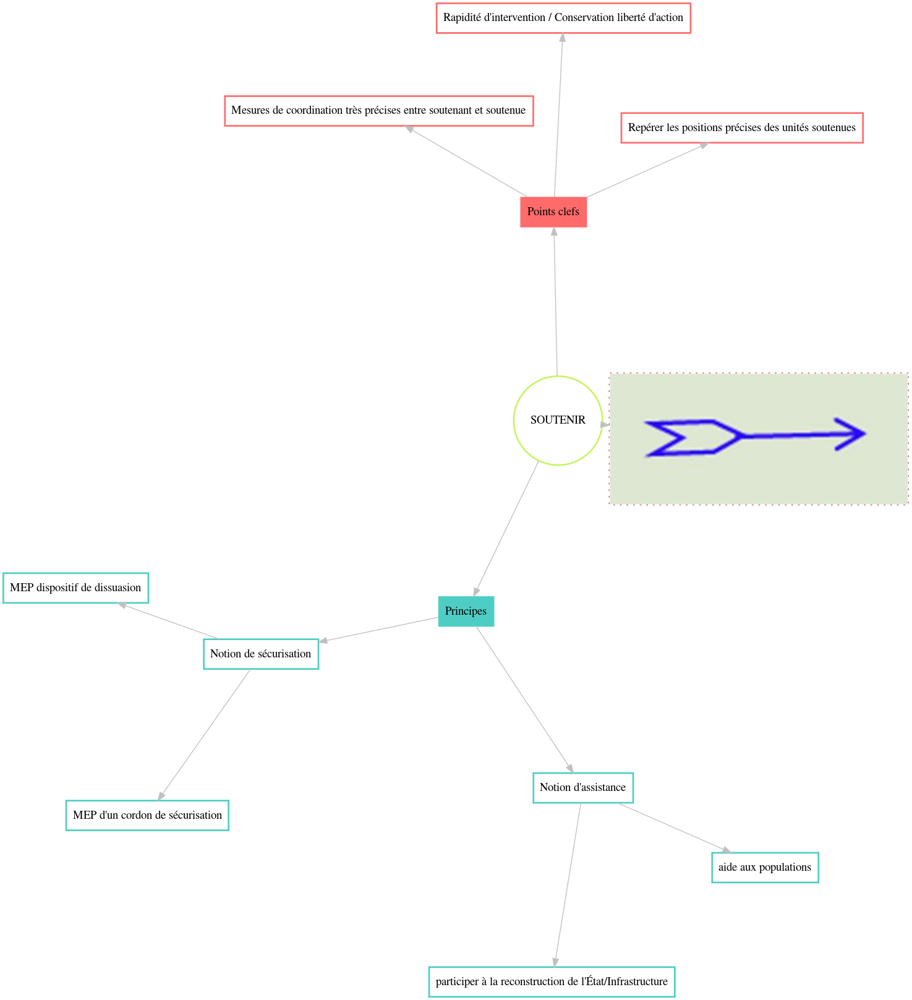
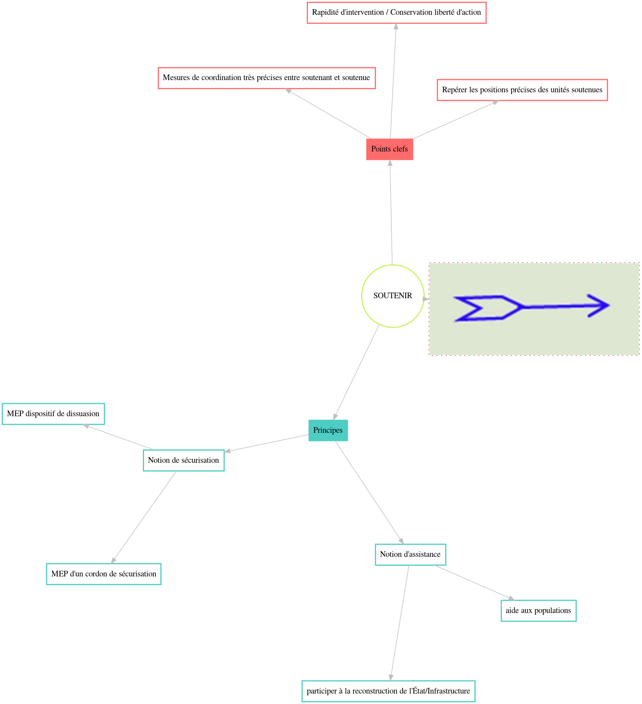

Soutenir
Définition
Mission de sécurisation et d'assistance consistant à intervenir au profit d'une autre unité, d'un détachement spécialisé, d'un organisme ou de populations, par la fourniture de moyens ou de services.
Principes et points clefs

Mission de sécurisation et d'assistance consistant à intervenir au profit d'une autre unité, d'un détachement spécialisé, d'un organisme ou de populations, par la fourniture de moyens ou de services.
